Displaying Local APRS Info to the DSTAR Operator?
Displaying Local APRS Info to the DSTAR Operator?
Displaying Local APRS Info to the DSTAR Operator?
Displaying Local APRS Info to the DSTAR Operator?
APRS was never intended to be a transmit-only
vehicle tracking system. It was intended to be a local information resource channel
where everything happening in ham radio in the local area was beaconed to keep everyone informed
in real time. In this regard, the front-panel mobile display of this information was the
primary objective. As shown below, with an attached GPS, the TEXTUAL
information displays on the radio and the positional information on the attached GPS.

CAN WE DISPLAY THIS INFORMATION FOR THE DSTAR MOBILE OPERATOR?
Pete AA5PL has done a lot of work in this area. Since the DSTAR radios can also display a remote callsign, the GPS position information and 20 bytes of text on their front panels, it seems that we should be able to figure out a way to display this same surrounding APRS local information on some DSTAR radios or attached devices and also on an attached GPS map. To explore the possibilities, below are some screen displays on the DSTAR radios and some concept thoughts...
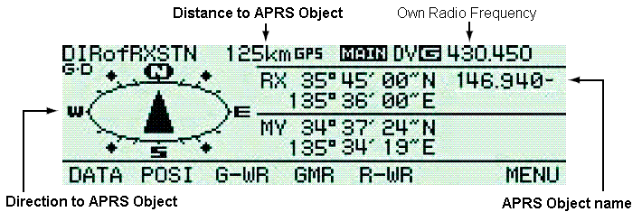
For example, the 2820 screen above can show the callsign, location, distance and direction
to another station. For the local APRS
voice repeater frequency object example at the top of this page, the callsign field
is used to carry the OBJECT NAME, and in this case, it is 146.940- which just happens
to fit in the same 8 byte display field. The 20 bytes of text showing the tone, range,
and net times are on a different display just like they are in APRS. Below is an
image of how such a "DSTAR GPS Message" could display on the ICOM 91b GPS message page.
(No one has sent me an example on a 2820 screen). This is showing the Tone, Range in miles, and
weekly net times of the 146.940- repeater object. But once you go to this screen,
the sending station callsign (in this case "146.940") is no longer displayed.
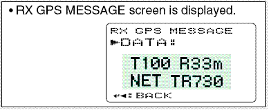
HAMFESTS: Another very important local APRS object is displayed for local HAMFESTS. These objects use the object Name of HFEST-ddx where dd is the day of the month, and "x" is unique to the local area. The "x" would not show on the 8 byte callsign field of the DSTAR radio, but the important HFEST and date would. See the GPS map display below which alerted me to a Hamfest coming up on the 12th. The APRS network can display all HAMFEST objects in the country by going to FINDU.COM for the callsign/object name of HFEST*
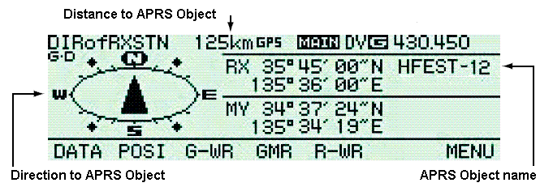 . . 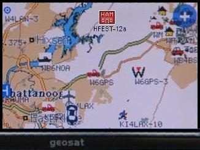
THE $299 PLUG-AND-PLAY SOLUTION:
Of course the easiest way to display APRS data on a 2820 radio is to just plug-in the RC-D710 APRS display head into the exteral audio connections of the ICOM-2820 and let the RC-D710 perform all of the APRS functions on the LEFT band of the 2820 radio on 144.39 and let the right side of the 2820 perform the DSTAR functions and DigitalVoice as shown below. Plug in an AVMAP G5 into the RC-D710 and you also then get the full color map display and APRS symbols too!
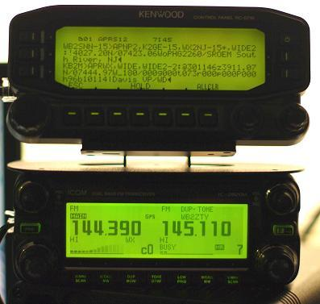
Now you have it all! The above photo is from KB2M who says it was just plug-n-play, just plug the standard DIN audio connection from the D710 display head to the ICOM radio's DIN connection. He had initial difficulty with audio levels, but eventually found that you must use the MPC program on the RC-D710 to set the TX audio level. Also, it was noted that the RC-D710 outputs baseband TX levels and so for some radios, an added 1.0 uF capacitor might need to be inserted in the data line. Jeff found a great location (see photo) inside the PG-5J interface box. Also the GPS needs to feed both the Icom radio and Kenwood Display head, so the serial line from the GPS needs to be split to the two ports. But otherwise it looks real nice! The D710 display in this photo is in a rather boring PACKET MONITOR display, just showing raw packets. But all the other APRS displays are available. See Jeff's actual installation.
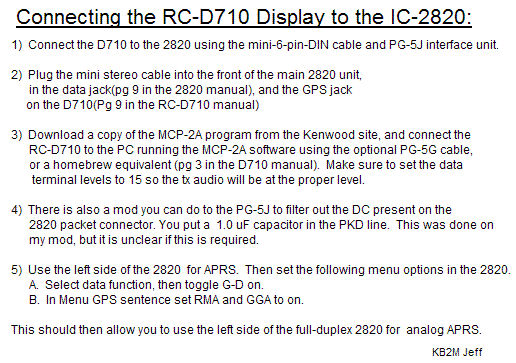
The RC-D710 Display Head only costs $199 and makes a nice APRS addition to any radio. It plugs into the TX and RX audio of any radio and turns it into an APRS radio just like the TM-D710 full function APRS radio. It would be nice to find a 10V regulated source inside the 2820 to power the RC-D710 display, otherwise you also need to purchase the PG-5J Cable/Regulator for about $87 to power the display head. It takes 300 mA at 10 volts regulated.
CLICK to see how all this is done in APRS. The remainder of this page is scarfed from that APRS LOCAL-INFO page until we have time do find out more about the details of how the DSTAR screens can be used.
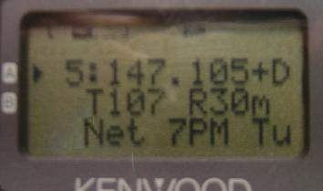
VOICE REPEATER FREQUENCY OBJECTS:
. For facilitating communiations
(especially for first-responders, visitors and travelers), the APRS system
beacons the locally recommended voice repeater frequency objects to mobile users
all across the USA. These objects include the local IRLP, EchoLink, and
Winlink frequencies plus NET times or meetings in progress or HAMFESTS, etc
as shown here.
ALL OF THIS INFORMATION IS TRANSMITTED IN THE SAME FIELDS AVAILABLE IN DSTAR!
That is, in a callsign field, a LAT/LONG field, and a 20 byte text field.
It just seems to me that we should be clever enough to figure out how to push
this information to the front panel display and attached GPS map for the D-STAR operator
just like we do in APRS.
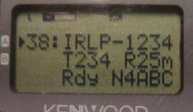
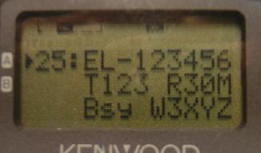
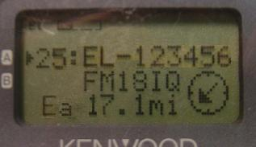
Notice how the IRLP and ECHOLINK nodes identify not only their node numbers and
callsigns, but also their Tone, Range and status. (Bsy, Rdy, Lnk etc)...
By pressing the OK button to see the POSIT screen, you can see that the Echolink
node is 17.1 miles to the Southwest.
[these photos were taken before we noticed that the Freqeuency
on the second line was missing!]
APRS is a two-way local Information Distribution and Communication System
TRACKERS ARE TWO-WAY-TOO: . Even transmit-only APRS trackers should be
configured to facilitate two-way human communications. . The RECEIVER should be tuned
to a desired voice communication
calling channel with this frequency information placed into the beacon text
of the tracker. . This way, all who see the tracker can also establish contact
with the operator. . Often this can simply be the
Voice Alert frequency.
HANDHELD DATA ENTRY: While we are talking about overlooked capabilities,...
Not only can these radios convey messages and frequencies, but
they also make excellent data entry devices in the field and at special events.
(and not just position!).
See D7 data entry at a scout event.
MESSAGING: Don't overlook that these radios can also send and receive messages between
mobiles or HT's anywhere in the world. They can even be used to send Email
as shown below. . Just press the MSG button, select
INPUT on the MSG Menu, enter EMAIL as the address,
and make the first text of the message be an email address
followed by your message. . In the example below, an EMAIL to A3XYZ@AMSAT.ORG
says
OK in OceanCity with HT & whip!. .
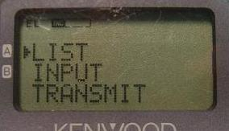
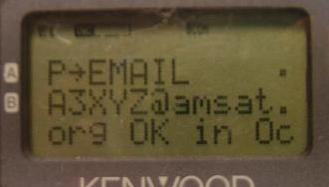
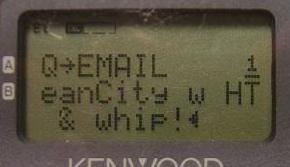
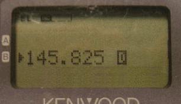
If your email is digipeated, then you will see MY MESSAGE
flashed on the screen indicating success.
PROGRESS ON TRANSMITTING REPEATER FREQUENCIES:
We have seen steady growth since this concept began. The latest sample on 3 April
2008 is at 255 on 2 meters. I think the 323 count in January had some errors and without
that data point, the curve is a nominal growth curve.
. To see the progress we are making in each band segment on this initiative, see these links:
TINY WEB PAGES: When the Kenwood D7 and D700 APRS mobiles came out in 1998 that could
display this info directly on the radio front panel, we called this info Tiny-Web-Pages.
See the TWP paper presented at the year 2000 DCC.
. The intent was to have all local ham radio activities of immediate local interest
show up on these radios to inform mobiles in real time about evertyhing going on in
ham radio around them.
. An APRSdata.exe program was written that could be run on someone's PC which would
then transmit to the front panel of all local radios, information on everything
such as WX, Satellites, DX, traffic, Nets, Meetings
and so forth. But as APRSdos became less used, and follow-on APRS clones
focused too much on only vehicle tracking,
most users these days have not seen these other applications for pushing local information
to mobiles in the area.
I expect to see lots more than just tracker callsigns show up on my radio. Some examples:
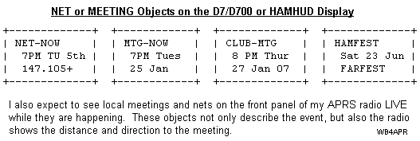
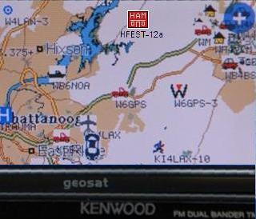
For NETS, use the "/N" NTS symbol and for meetings,
use the "/E" EYEBALL symbol.
HAMFESTS: For HAMFESTS please use the \h symbol and use the object
name of HFEST-ddx where dd is the day of the month, and "x" is the next unused
symbol. See the GPS map display above which alerted me to a Hamfest coming up on the 12th.
This way, anyone can get a live list of all HAMFEST objects in the
country by going to FINDU.COM for the callsign/object name of
HFEST*
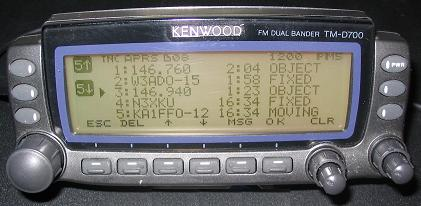
SOME DISPLAY EXAMPLES: The display at the top of this page is what flashes on the front panel for 10 seconds when the
packet is received. If the driver does not happen to see this display, then the Repeater will
show up as an object on the radio's STATION list as shown to the right on a D700:
In this case, the newer 146.76 repeater has appeared on the list and the older repeater
from the previous town is going down the list. Of course, usually it is much further
down the list than shown here. When the user sees one of these repeater objects in his
STATION list he can know that he is in DIRECT range of that repeater and he can
select it to see any other amplifying information such as tone, range, nets and meeting times.
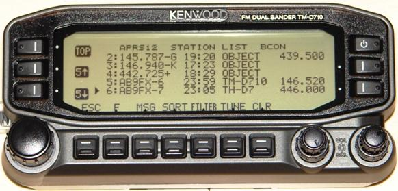
FREQUENCIES ON STATION LIST on the D710: . In the next photo to the right,
the new D710 even
has a column on the station list for displaying the operating frequency if it is included
in the station's packet. In this case, the first three are Local Repeater Objects,
but the first one of those is a cross-band repeater, so both the output frequency
(object name) and input frequency can be shown.
. The last two stations on the list are
another D710 and D7 simply showing their current operating frequency.
When an object is selected as shown below left,
the split frequency cross band repeater example above shows on a D710
display below
(complements of AB9FX). His example shows "233.6 Hz"
instead of the more compact recommended "T233 RXXm" tone and range.
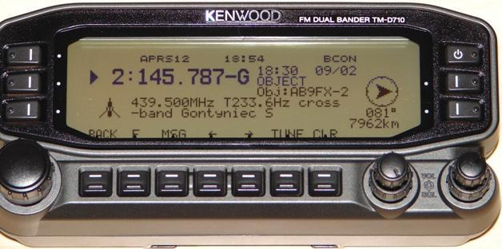 . .
The yellow D700 screen on the right above shows an example of the correct final format,
though it does not use the 3rd line of 8 characters to also include the
club meeting dates.
Note also that TONE is now Tnnn and typical useable range is
R33m in this case.
TRANSMITTING THESE OBJECTS: It is very important for all users of APRS to understand the details and
purpose of this local info system. And the most important aspect of this system is the word
LOCAL, that is, the packet announcing such a voice repeater is seen DIRECT ONLY
in no other area then the local DIRECT coverage area of the repeater itself.
It violates the principle of this concept if these repeater objects are seen in areas
where the repeater cannot be immediately worked DIRECT.
FREQ SPEC: . This is all just part of the APRS Frequency Specification that encourages
the addition of FREQUENCY information in all position packets of significance to improving
user-to-user communications. See the AFRS Freq-Spec.
WHICH REPEATERS: The first concept is that very few of the 10's of thousands of voice
repeaters should even be considered to be announced on APRS. If more than one repeater in an
area is announced, then the value of the system is diminished. We end up with
nothing more than a repeater directory on the air which is displaying too-many repeaters in any
given area to have any idea which one is the best for the APRS Traveler.
In any given area there is usually one-and-only-one generally recommended repeater for the
long haul and through traveler. That is usually the repeater with the highest probability
of finding someone
at all hours. ONLY those such repeaters (and/or known APRS dominated
voice repeaters) should be indicated on APRS.
KEEP IT LOCAL! The second concept is that the packet simply should only cover the same
area as the useble area of the voice repeater. And the packet should be originated at an
APRS digipeater so that the packet does not collide with any other packet on the air. The
digipeater can hear everything on the APRS channel, and it will only originate this info packet
when the channel is otherwise clear. This is why this local info can be added at no cost
to the network. See the
list of APRS coordianators.
FORMATS FOR FREQUENCY OBJECTS FROM DIGIPEATERS:
The New-N Paradigm includes the details on
how to set up these repeater info packets as objects in the BeaconText of a
New-N Paradigm DIGIPEATER. The exact format was derived after extensive
discussion and testing,
with the displays of the D700 and D7 and HAMhud for best appearance on the front panel.
Using those recommendations, the packets will only be seen locally and there will be
no digipeats and no collisions with local traffic. Only THREE settings in each
digipeaeter are needed:
BEACON EVERY 10 . . . . . . .(every 10 minutes)
FINDU.COM Workarounds: FINDU.COM and other APRS web pages have some limitations
that can limit the flexibility
in finding unique "xyz" discriminators for your repeater. First, FINDU.COM does not
distinguish between upper and lower case, and second, it does not plot the positions
of objects that use the "+" in the object name. Find something else for your object.
The Tnnn RXXm NETxxxxxx MTGyyyyy free-text field can actually be 37 bytes long,
but only the first 20 bytes are visibile on the D7 and Hamhud (without scrolling)
and only the first 28 bytes are visible on the D700. All of these fields are optional,
but are highly recommended if they apply. .
Further, when these packets first come in, they are flashed on the radio in the indicated
10x10x8 three line format. So it is best to meet these word boundaries for best display on the
mobiles. The following are examples for the free-text fields
in descending priority order:
First line (10 bytes Tnnn RXXm):
Second Line (10 bytes NETxxxxxx):
Third Line: (8 bytes MTGxxxxx):
Additional text:... Following the above 28 bytes, additional text may be included for
APRS clients and home stations, but it will not show up on the D7 or D700.
RANGE INDICATION: . Range is useful for the mobile, since the D7 or D700 calculate
and display the range to the object. . If the Radio says it is 35 miles away, and the text
says it is good to 45, then it is quite useable. . This can be "R30k" for kilometers. .
Even cardiod patterns can be specified with
two ranges and directions. . We don't need to specify the TONE.tenths since they are
all standardized. .
If it is DCS then the line would be "D456 R45m"
POSITION AMBIGUITY: . Remember that these objects can use position ambiguity since the
exact location of the repeater is not needed, only its approximate location. . One-mile
ambiguity is obtained if you replace the "hh" digits of LAT/LONG with two spaces each.
If you want greater 10 mile ambiguity, then also replace the unit's digit of minutes with a space too.
IRLP and EchoLink FREQUENCY OBJECTS: .
In addition to the locally recommended VOICE QSO repeaters, the IRLP and EchoLink repeaters
are also highly recommended to have LOCAL objects on APRS also. Their format is somewhat
similliar, but we want them to show up in the station list as IRLP-NNNN and
EL-NNNNNN to clearly differentiate them from the voice repeater frequency objects.
Unfortuntely the photos here do not show the frequency which should be the second line
of the display...
Please see the AVRS web page for the overall concept
and AFRS Freq-Spec for the detail format.
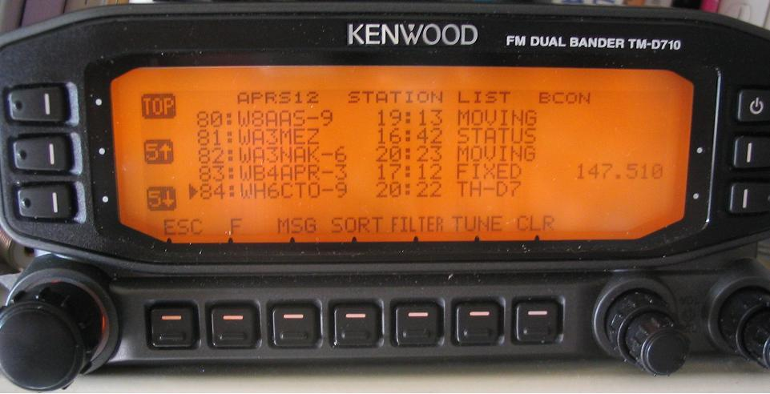
ADDING FREQUENCY TO YOUR MOBILE OR FIXED STATION:
If you can usually be found on a favorite operating frequency, please add it to your packets.
In the photo below,
the new D710 not only can include your operating frequency in all of your position packets,
but it als includes a new right hand column for FREQUENCY display of each station.
It also has a TUNE button that will instantly tune the radio to the
station's indicated frequency! Also notice the SORT button. Not only can you sort all
stations by RANGE, to find out who is closest to you, but if you are looking for the
local repeater frequency objects, you can sort by CALLSIGN and then all of the numeric
FREQUENCY objects will show up in the top five stations on the list!
To have your frequency from your mobile show up on other radios, you can either use the
D710 radio in which it is automatic if you select STATUS TEXT #5 or you can
manually enter it into your STATUS TEXT. The format is exactly as follows:
The first 10 bytes must be the frequency. MHz in mixed case must be next. And
Tone if required must be next. The remainder of your status can contain anything else.
What I transmit in my D700 is the following:
147.105MHz T107 and V-Alert (if you have a tone)
Which shows nicely on other radios on three lines as follows:
WB4APR-9
WB4APR-9
OBJECTS FROM APRS CLIENTS NOT DESIRED: This Local Info Initiative is fundamentally
designed around the unique features of BEACON TEXTS in local digipeaters.
In contrast, it is not generally welcome to generate these repeater objects
from typical APRS home user stations.
These client originated repeater objects are generally not welcome for several reasons:
ONE-DIGI / ONE-VOICE-REPEATER: The simple rule of thumb, is that in the coverage
area of each APRS digipeater, most locals can agree on which is the one-and-only most important
voice repeater for that local direct area. Therefore, that digi should include that one voice
repeater in it's beacon text. Done. This is all part of the New-N paradigm, but apparently
many sysops didn't notice this part of the New-N paradigm settings.
The reason for this new initiative is that I just returned (Jan 07) from an 1800 mile round trip between
Maryland and Alabama, and only saw a few such voice repeaters the whole way. In fact, I spent
almost all of my radio time while mobile, tuning around and trying to FIND the travelers repeaters.
About the only way I ever found these repeaters was by running into another APRS user running
Voice Alert. His PINGS alerted me to his simplex presence, and I could call him and ASK
what was the local channel for the traveler.
See Voice Alert
or... (.DOC version)
OBJECT PERMANENCE: Although these Frequency objects are unique local objects, there
has always been the potential for confusion in the APRS system when local objects with common
names are collected globally by the APRS-IS system. Fortunately for this application, there are
no local display issues because no two repeaters would ever cover the same direct
area on the same frequency. Thus on the front panel of a mobile radio or HAMHUD, only
the local frequency would ever appear.
For the global APRS-IS, however, there are three solutions as documented in the
Permanent Object format included in APRS1.2:
Note the limitations above of FINDU that cannot discriminate lower case from upper case
of the letters "xyz" and
also will not display frequency objects on the map that have a "+" in the name.
LOCAL SATELLITE ALERTS:
These radios can also display the frequency, doppler, azimuth and distance to any
satellites in view if someone is running
APRSdata.EXE on a PC as a local service in the region.
. This program not only generates Satellite Objects on the front panel of
all local Kenwood Radios, it also sends out every 10 minutes a schedule
of the next 80 minutes of pass predictions.
. The satellites are normal APRS objects, but the schedule is sent as a
DX spot to the DX-LIST in the radios. This way, no one needs a
tracking program, they will receive it live over the air on their radio
front panel as shown below
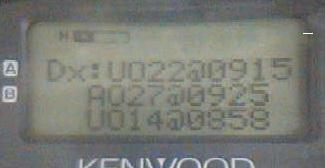
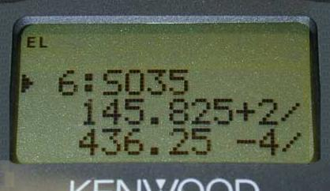
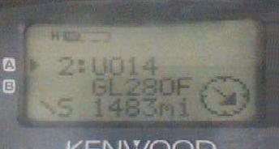
The first image shows the DX-SPOT list showing that there are three satellites
UO22, AO27 and UO14 coming up in the next 80 minutes and when. . This schedule
is updated every 10 minutes.
. The next two screens are only transmitted when the satellite is in view.
. They show the Range, Azimuth, Uplink and Downlink Frequencies, Doppler
and distance to the satellite. Just perfect for aiming your handheld
antenna. For more details see APRS Satellite Resources.
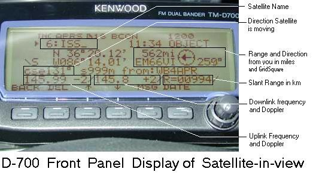
The above screen shows how this data looks on the screen of the D700.
. It is a little bit busier, since all of the data shows on just the one screen.
NEW INITIATIVE IMPLEMENTATION STATUS: . At any time, you can query FINDU for the
"r" symbol
and see all of the existing Repeater Objects. . or check individual frequencies using
the links near the top of this page. . As of April 08, there are over 330
such objects.
NOTE. . FINDU has a problem with the "+" symbol in all such
FFF.FFF+ objects and those objects will not show up on the FINDU maps, but they DO show up
well in the "/r" list of repeater objects. . But since it has now been over 18 months
and it has not been fixed, we now only receommend placing a "+" in the object name if it is
absolutely necessary. Most repeater offsets are standard anyway.
CONCLUSION: On long trips, no matter where you are,
we hope you will see not only one of these recommended
voice repeaters on your screen, but also the nearest IRLP or EchoLink node as well...
This combined with APRS
Voice Alert
will guarantee that if there is someone nearby wanting to chat, we will find
each other.
Bob Bruninga, WB4APR
P.S. . Oh, there is an
on line repeater lookup
system, but it is just like the repeater directory. So many repeaters,
so little time to pick out the one that is useable by travelers...
(not just a vehicle tracking system). See APRS misconceptions!
The objective is Human-to-human local real-time info and communications! .

Note: An anomoly in FINDU.COM does not display the map for frequency objects
with a "+" in them, though the object is listed and still works fine locally on RF.
UNPROTO APN383 . . . . . . . (For a KPC-3+ version 8.3. Note, no hops!)
BTEXT ;FFF.FFxyz*111111zDDMM.hhN/DDDMM.hhWrTnnn RXXm NETxxxxxx MTGxxxxx .........
147.105MHz & Voice-Alert
147.105MHz
T107 and
V-alert
147.105MHz
& Voice-
Alert
1) Object permanence is indicated with the unique timestamp of 111111z in the object format
2) A repeater object can have one of 62 unique FFF.FFFyz names by choosing an unused character for "yz".
3) A repeater object can have one of 3600 unique FFF.FFxyz names by choosing an unused "xyz".
{kind=link}
{kind=link}